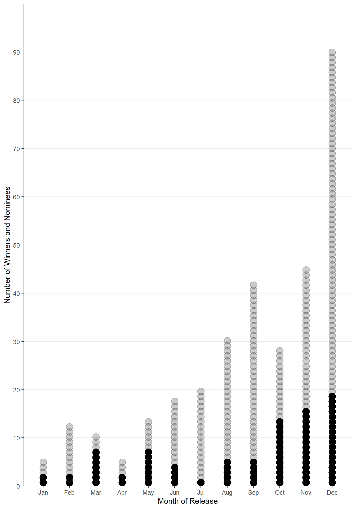
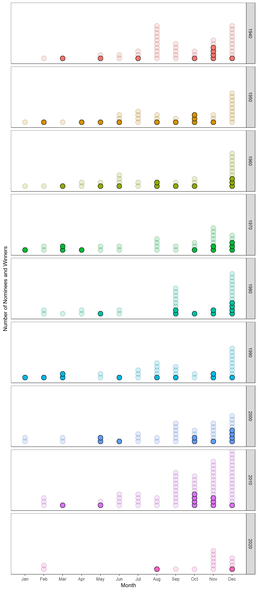
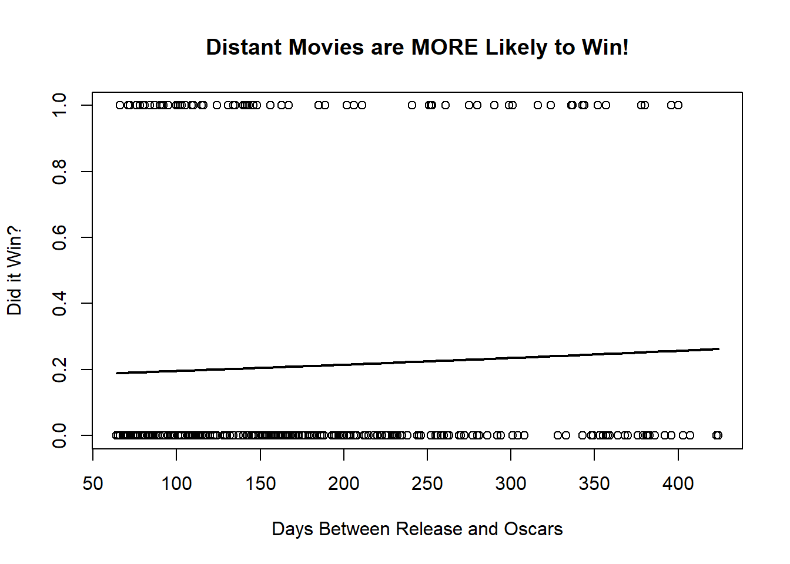

Every-Nominee Every-Year All at Once

My favorite movie of 2022 was, by far, Everything Everywhere All at Once. It’s a genre-defying kung-fu, multiverse, absurdist comedy, family drama film that really captures some of the challenges of being alive today. When the Oscars came around I had low hopes: it is the antithesis of an Oscar-winning movie. It’s an action-heavy sci-fi with rude humor, and it came out in March. But I wanted to know if there was any hope for this film, so I decided to see what months of the year different movies get nominated, and which ones end up winning.
Everything
I started out with this text article from Wide Screenings that I copied into Excel. It had very bare-bones information, and was definitely not designed to be analyzed. Row 1 reads: \(~\)
“2021: CODA beat West Side Story, Drive My Car, Licorice Pizza, Dune, King Richard, Belfast, Don92t Look Up, Nightmare Alley, The Power of the Dog (Presented by Lady Gaga and Liza Minnelli)”
That sure is ugly. Lucky for us, there’s just enough to work with. The colon separates the year, the missing characters (\x97) separate the winner from the other nominees, and the nominees are separated by commas. We’re also blessed that only one nominee has ever had a comma in its name. We can split up the values into the year, and then pivot to give each movie its own row.
Code
df$everything <- str_replace(df$everything,"\x97",'%')
df$everything <- str_replace(df$everything,"\x92",'')
df[,2:3] <- str_split_fixed(df$everything,": ",n=2)
df[,3:4] <- str_split_fixed(df$V2," % beat ",n=2)
df$V2 <- str_replace(df$V2,"%",'')
colnames(df) <- c('everything','year','winner','other')
df[,4] <- str_replace(df$other,"\\((P).*$","")
df[,4:12] <- str_split_fixed(df$other,', ',n=9)
#datatable(df)Code
df2 <- df %>%
select(-c(everything,other)) %>% #the presented column
pivot_longer(cols =-year)
df_date <- df2 %>%
filter(!is.na(value) & value != '') %>%
mutate(Winner = ifelse(name=='winner',"Yes","No"))
df_date$value[42] <- "Hidden Figures"
df_date$value[72] <- "Les Miserables"
df_date$value[397] <- "Kitty Foyle"
pander(head(df_date,5))| year | name | value | Winner |
|---|---|---|---|
| 2021 | winner | CODA | Yes |
| 2021 | V2 | Drive My Car | No |
| 2021 | V3 | Licorice Pizza | No |
| 2021 | V4 | Dune | No |
| 2021 | V5 | King Richard | No |
Everywhere
Now that we have the movies, we just need to find their release dates. There are lots of movie databases online that will have all of these movies recorded. IMDB is the most popular, but the free API only gives you the release year, not month. We were able to find one from The Movie DB that gives us the full release date.
\(~\) One issue, though, is that some of these movies repeat. Although I could usually just grab the most popular title match and that would be fine, “West Side Story” won the Best Picture award in 1961, and a remake was nominated in 2021. To fix this, my function kept track of the release year, and only grabbed the date that matched the year.
Click to view the Function:
Code
api_key <- "f5ab5193b16afd89c855dae1001b3bb1"
# Function to get movie release date from TMDB API
get_movie_release_date <- function(movie_name,listing_match=1) {
# API endpoint
endpoint <- paste0("https://api.themoviedb.org/3/search/movie?api_key=", api_key, "&query=", gsub(" ", "+", movie_name))
# Send API request
response <- GET(endpoint)
# Check status code
if (response$status_code == 200) {
# Parse response as JSON
#print('Got something')
#json_stuff <- read_json(endpoint)
json_data <- fromJSON(content(response, as='text'))
# Get first result
first_date <- json_data$results$release_date[listing_match]
return(first_date)
} else {
return(NA)
}
}
# Example usage
movie_name <- "Kitty Foyle: The Natural History of a Woman"
pander(get_movie_release_date(movie_name,1))
for (i in 1:length(df_date$value)-200) {
get_movie <- "first"
num_tries <- 1
while(!substr(get_movie,1,4) %in% c(df_date$year[i],
as.character(as.integer(df_date$year[i])+1),
as.character(as.integer(df_date$year[i])-1))) {
get_movie <- get_movie_release_date(df_date$value[i],num_tries)
if(num_tries == 7){
break
}
num_tries <- num_tries + 1
}
df_date[i,5] = ifelse(num_tries == 4, '', get_movie)
}
df_date <- df_date %>%
mutate(month = as.numeric(substr(...5,6,7)),
decade = as.numeric(substr(...5,1,3)))
pander(head(df_date,5))Because I used an API function, I didn’t want to run it too many times. I had to work through errors, and it didn’t always connect consistently. As a result, I saved the final version as a separate .csv, and I’ll use that for the rest of the project.
Code
| Year | Film | Win? | Release Date | Release Month | Release Decade |
|---|---|---|---|---|---|
| 2021 | CODA | Yes | 2021-08-11 | 8 | 2020 |
| 2021 | Drive My Car | No | 2022-02-18 | 2 | 2020 |
| 2021 | Licorice Pizza | No | 2021-11-26 | 11 | 2020 |
| 2021 | Dune | No | 2021-10-22 | 10 | 2020 |
| 2021 | King Richard | No | 2021-11-18 | 11 | 2020 |
All At Once
Now we can compare across the months. We can see that December’s “Oscar season” does not disappoint, with the vast majority of nominees as well as the most winners. Movies in earlier months get nominated less often than those in later months, but it also seems like they’re more likely to win. I think that’s because the movies that are resonant enough with audiences to survive in the conversation for a whole year are more likely to have been the best movie that year.
\(~\) My movie of the year came out in March, which has a surprisingly high number of winners: over 70% of nominated movies from that year end up winning!
Code
ggplot(df_date,aes(x=month)) +
geom_dotplot(aes(alpha=as.factor(Winner)),
stackratio = .7,dotsize=.75) +
ylim(c(0,10)) +
scale_alpha_manual(values = c("Yes" = 1, "No" = .2)) +
scale_x_continuous(breaks=seq(1,12,1),labels=month.abb) +
scale_y_continuous(limits=c(0, 1), expand = c(0, 0), breaks = seq(0, .9,1/10), labels=seq(0,90,10)) +
theme_bw() +
labs(x='Month of Release',y='Number of Winners and Nominees') +
theme(#axis.text.y = element_blank(),
#axis.ticks.y = element_blank(),
panel.grid.minor = element_blank(),
panel.grid.major.x = element_blank(),
legend.position='none'
#axis.ticks.y.right = element_line(size = 3,linetype = 1), # not appearing
#axis.text.y.right = element_text()
#ticks on right side? closer to big months
) 
I learned a lot about GGPlot, mostly that it has very limited dotplot functionality. I had to manually rescale the figure so the axes labels would actually line up, but I stuck with the dotplot because it let me see dot/movie individually.
\(~\) We can also look at the breakdown across different decades. The Academy started awarding a lot more nominations to movies around 2010, so those bars are a lot higher.
Code
ggplot(filter(df_date,!is.na(decade)),aes(x=month)) + geom_dotplot(aes(fill=as.factor(decade), alpha=as.factor(Winner)), stackratio = .7,dotsize=.75) +
ylim(c(0,5)) +
scale_alpha_manual(values = c("Yes" = 1, "No" = .2)) +
facet_grid(rows=vars(as.factor(decade*10))) +
#facet_wrap(~df_date$decade*10,nrow=2,ncol=5) +
scale_x_continuous(breaks=seq(1,12,1),labels=month.abb) +
labs(x='Month',y='Number of Nominees and Winners') +
theme_bw() +
theme(axis.text.y = element_blank(),
axis.ticks.y.left = element_blank(),
panel.grid = element_blank(),
legend.position = 'none'
)
Extended Edition
Just for fun, I ran a logistic model to try and predict whether or not a movie would win, based on how many days away from the awards it was released. I took March 1st as a generic Awards day and counted from there: movies released in January or February would get another 365 days added to their score, because they would be in contention for the next year’s awards.
Code
log_date <- df_date
year(log_date$...5) <- 2022
log_date <- log_date %>%
mutate(dayssince = as.numeric(ymd("2023-03-01")-...5),
dayssince = ifelse(dayssince<60,dayssince+365,dayssince))
log_model <- glm(Winner=='Yes'~dayssince,data=log_date,family=binomial)
b <- log_model$coefficients
plot(Winner=='Yes'~dayssince,data=log_date,
xlab='Days Between Release and Oscars',
ylab='Did it Win?',
main='Distant Movies are MORE Likely to Win!')
curve(exp(b[1]+b[2]*x)/(1+exp(b[1]+b[2]*x)),add=TRUE,lwd=2)
Our model is, unfortunatley, not statistically significant, but it does match our earlier hypothesis that movies are MORE likely to win if they were released a long time ago and won a nomination.